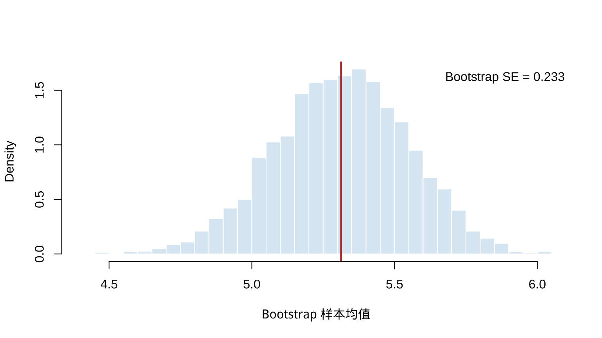
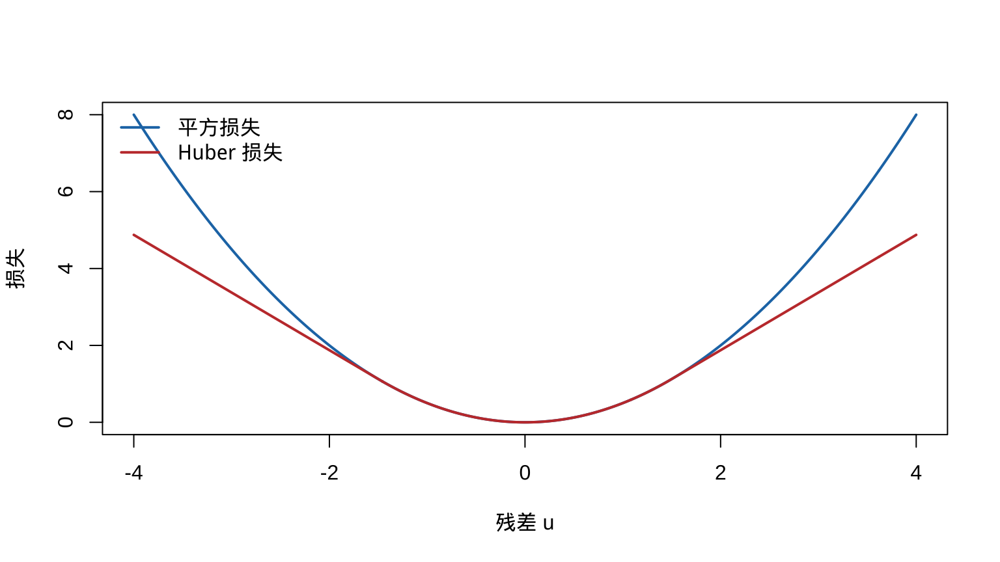

第 10 渐近理论与近似方法
本章对应 chap-10.tex 及四个 LaTeX 子文件，讨论相合性、渐近方差与效率、相对效率、Bootstrap 标准误、Huber M 估计、LRT 渐近分布和近似最大似然区间。原课件没有外部图形或 R 文件；本章增加两个基础 R 示例以呈现 Bootstrap 与稳健损失的计算含义。
10.1 相合估计量
渐近性质针对一列估计量 \(W_n=W_n(X_1,\ldots,X_n)\)。相合性要求样本量增大时估计量集中到正确参数。
定义 10.1 若对每个 \(\epsilon>0\) 与 \(\theta\in\Theta\)， \[\lim_{n\to\infty}P_\theta(|W_n-\theta|<\epsilon)=1,\] 则称 \(W_n\) 是 \(\theta\) 的相合估计量序列，即 \(W_n\overset p\to\theta\)。
例 10.1 例 10.1.2（样本均值的相合性） 若 \(X_i\overset{\mathrm{iid}}\sim N(\theta,1)\)，证明 \(\bar X_n\) 是 \(\theta\) 的相合估计量。
查看详细解答
因为 \(\bar X_n\sim N(\theta,1/n)\)，所以 \[ \begin{aligned} P_\theta(|\bar X_n-\theta|<\epsilon) &=\int_{-\epsilon\sqrt n}^{\epsilon\sqrt n}\frac1{\sqrt{2\pi}}e^{-t^2/2}\,dt\\ &=P(-\epsilon\sqrt n<Z<\epsilon\sqrt n)\longrightarrow1. \end{aligned} \] 故 \(\bar X_n\) 相合。
10.2 MLE 的正则条件与相合性
原课件列出一组常用充分条件：
- \(X_1,\ldots,X_n\) iid，密度为 \(f(x\mid\theta)\)；
- 模型可识别：\(\theta\ne\theta'\) 时 \(f(\cdot\mid\theta)\ne f(\cdot\mid\theta')\)；
- 各密度有共同支撑，且关于 \(\theta\) 可微；
- 真参数 \(\theta_0\) 位于参数空间某个开集的内部；
- \(f(x\mid\theta)\) 关于 \(\theta\) 三次可微，并允许在积分号下三次求导；
- 在 \(\theta_0\) 邻域内，\(|\partial^3\log f(x\mid\theta)/\partial\theta^3|\le M(x)\)，且 \(E_{\theta_0}M(X)<\infty\)。
前四项用于相合性的课件版本，后两项再用于渐近正态与效率。现代定理可采用不同的更弱条件；这里保留原课程条件集。
定理 10.1 定理 10.1.6（MLE 的相合性） 在上述相合性正则条件下，若 \(\hat\theta\) 是 MLE，\(\tau(\theta)\) 连续，则 \[\lim_{n\to\infty}P_\theta\{|\tau(\hat\theta)-\tau(\theta)|\ge\epsilon\}=0.\] 因此 \(\tau(\hat\theta)\) 相合。
查看推导过程
教材在此仅给证明纲要。对每个固定 \(\vartheta\)，强大数定律给出
\[ \frac1n\log L(\vartheta\mid\mathbf X) =\frac1n\sum_{i=1}^n\log f(X_i\mid\vartheta) \longrightarrow E_\theta\{\log f(X\mid\vartheta)\} \]
几乎处处成立。由 Kullback–Leibler 不等式与模型可识别性，右端作为 \(\vartheta\) 的函数在真参数 \(\theta\) 处唯一最大。在教材所引用的附加一致收敛和紧性条件下，样本平均对数似然的最大点 \(\hat\theta\) 因而依概率趋于 \(\theta\)。最后由连续映射定理， \(\tau(\hat\theta)\overset p\to\tau(\theta)\)。
一般情形需要教材 Miscellanea 10.6.2 所述技术条件；当前资料没有给出这些条件下的完整严格证明，因此这里保留教材的证明纲要。
10.3 极限方差与渐近方差
相合性关心是否趋向目标；效率关心趋近速度和归一化后的波动。若 \(\operatorname{Var}(T_n)\to0\)，可寻找 \(k_n\) 使 \(k_n\operatorname{Var}(T_n)\) 有非零极限。
定义 10.2 若 \(k_n\operatorname{Var}(T_n)\to\tau^2<\infty\)，则 \(\tau^2\) 称为方差的极限。若 \[a_n\{T_n-\tau(\theta)\}\overset d\longrightarrow N(0,\sigma^2),\] 则 \(\sigma^2\) 称为相应归一化下的渐近方差。
例如 \(n\operatorname{Var}(\bar X_n)=\sigma^2\)。但 \(1/\bar X_n\) 在正态模型下可能没有有限的精确方差；Delta 方法仍给出 \[E(1/\bar X_n)\approx1/\mu,\qquad \operatorname{Var}(1/\bar X_n)\approx\frac{\sigma^2}{n\mu^4},\] 说明“方差极限”和“极限分布的方差”不可混为一谈。
10.4 渐近效率与 MLE
定义 10.3 若 \[\sqrt n\{W_n-\tau(\theta)\}\overset d\longrightarrow N\{0,v(\theta)\},\] 且 \[v(\theta)=\frac{[\tau'(\theta)]^2}{I_1(\theta)},\qquad I_1(\theta)=E_\theta\left[\left\{\frac\partial{\partial\theta}\log f(X\mid\theta)\right\}^2\right],\] 则称 \(W_n\) 渐近有效。
定理 10.2 定理 10.1.12（MLE 的渐近有效性） 在前述正则条件下，若 \(\hat\theta\) 是 MLE，\(\tau\) 连续且在所需点可微，则 \[\sqrt n\{\tau(\hat\theta)-\tau(\theta)\}\overset d\longrightarrow N\{0,v(\theta)\},\] 其中 \(v(\theta)\) 为 Cramér–Rao 下界。因此 \(\tau(\hat\theta)\) 相合且渐近有效。
查看推导过程
教材先证明 \(\hat\theta\) 本身的结论。记 \(\ell_n(\theta)=\sum_{i=1}^n\log f(X_i\mid\theta)\)。在真参数 \(\theta_0\) 附近对得分作 Taylor 展开，并忽略由正则条件控制的高阶余项：
\[0=\ell_n'(\hat\theta) =\ell_n'(\theta_0)+(\hat\theta-\theta_0)\ell_n''(\theta_0)+o_p(\sqrt n\,|\hat\theta-\theta_0|).\]
整理得到
\[ \sqrt n(\hat\theta-\theta_0) =\frac{n^{-1/2}\ell_n'(\theta_0)}{-n^{-1}\ell_n''(\theta_0)}+o_p(1). \]
由中心极限定理和弱大数定律，
\[n^{-1/2}\ell_n'(\theta_0)\Rightarrow N\{0,I_1(\theta_0)\}, \qquad -n^{-1}\ell_n''(\theta_0)\overset p\longrightarrow I_1(\theta_0).\]
Slutsky 定理于是给出
\[\sqrt n(\hat\theta-\theta_0) \Rightarrow N\left\{0,\frac1{I_1(\theta_0)}\right\}.\]
再对 \(\tau\) 使用 Delta 方法，渐近方差成为 \([\tau'(\theta_0)]^2/I_1(\theta_0)\)，即 Cramér–Rao 下界。教材把从 \(\hat\theta\) 推广到 \(\tau(\hat\theta)\) 的步骤留作练习 10.7；这里仅按 Delta 方法说明该连接。
10.5 渐近相对效率
定义 10.4 若 \[\sqrt n\{W_n-\tau(\theta)\}\Rightarrow N(0,\sigma_W^2),\qquad \sqrt n\{V_n-\tau(\theta)\}\Rightarrow N(0,\sigma_V^2),\] 则 \(V_n\) 相对于 \(W_n\) 的渐近相对效率为 \[\operatorname{ARE}(V_n,W_n)=\frac{\sigma_W^2}{\sigma_V^2}.\] ARE 大于 1 表示在此约定下 \(V_n\) 的渐近方差更小。
10.6 Bootstrap 标准误
对样本 \(\mathbf x\) 及估计量 \(\hat\theta\)，从经验分布有放回抽取大小为 \(n\) 的 Bootstrap 样本。若枚举全部 \(n^n\) 个重抽样， \[\operatorname{Var}^*(\hat\theta)=\frac1{n^n-1}\sum_{i=1}^{n^n}(\hat\theta_i^*-\bar{\hat\theta}^*)^2.\] 实际使用 \(B\) 个重抽样： \[\operatorname{Var}_B^*(\hat\theta)=\frac1{B-1}\sum_{i=1}^B(\hat\theta_i^*-\bar{\hat\theta}^*)^2.\]
理论上需区分固定样本时 \(B\to\infty\) 的 Monte Carlo 收敛，以及 \(n\to\infty\) 时 Bootstrap 分布对真实抽样分布的一致性。
set.seed(1001)
x <- c(4.1, 5.3, 4.8, 6.2, 5.7, 4.9, 5.5, 6.0)
B <- 4000
boot_mean <- replicate(B, mean(sample(x, replace = TRUE)))
hist(boot_mean, breaks = 32, probability = TRUE,
col = "#DCEAF4", border = "white",
xlab = "Bootstrap 样本均值", main = "")
abline(v = mean(x), col = "#C43C39", lwd = 2)
legend("topright", sprintf("Bootstrap SE = %.3f", sd(boot_mean)), bty = "n")
图 10.1: 样本均值 Bootstrap 分布与标准误
10.7 Huber 损失与 M 估计
Huber 损失在中心使用平方损失、在尾部使用线性损失： \[ \rho_k(u)= \begin{cases}u^2/2,&|u|\le k,\\ k|u|-k^2/2,&|u|>k. \end{cases} \] M 估计量最小化 \(\sum_i\rho_k(x_i-a)\)。令 \(\psi=\rho'\)，一阶条件为 \[\sum_{i=1}^n\psi(x_i-\hat\theta)=0.\] 若 \(E_{\theta_0}\psi(X-\theta_0)=0\)，则 \[-\frac1{\sqrt n}\sum_{i=1}^n\psi(X_i-\theta_0) \Rightarrow N\left(0,E_{\theta_0}[\psi(X-\theta_0)^2]\right),\] 再结合估计方程局部线性化可得到 \(\hat\theta\) 的渐近正态性。
u <- seq(-4, 4, length.out = 401)
k <- 1.5
huber <- ifelse(abs(u) <= k, u^2 / 2, k * abs(u) - k^2 / 2)
plot(u, u^2 / 2, type = "l", lwd = 2, col = "#1F77B4",
xlab = "残差 u", ylab = "损失")
lines(u, huber, lwd = 2, col = "#C43C39")
legend("topleft", c("平方损失", "Huber 损失"),
col = c("#1F77B4", "#C43C39"), lty = 1, lwd = 2, bty = "n")
图 10.2: 平方损失与 Huber 损失
10.8 LRT 的渐近分布
定理 10.3 定理 10.3.1（简单原假设下 LRT 的渐近分布） 检验 \(H_0:\theta=\theta_0\) 对 \(H_1:\theta\ne\theta_0\)。若 \(X_i\) iid、\(\hat\theta\) 是 MLE 且模型满足正则条件，则在 \(H_0\) 下 \[-2\log\lambda(\mathbf X)\overset d\longrightarrow\chi_1^2.\]
展开证明
令 \(\ell_n(\theta)=\log L(\theta\mid\mathbf X)\)。在 \(\hat\theta\) 附近对 \(\ell_n(\theta_0)\) 作二阶 Taylor 展开：
\[ \ell_n(\theta_0) =\ell_n(\hat\theta)+\ell_n'(\hat\theta)(\theta_0-\hat\theta) +\frac12\ell_n''(\tilde\theta)(\theta_0-\hat\theta)^2, \]
其中 \(\tilde\theta\) 位于 \(\theta_0\) 与 \(\hat\theta\) 之间。由于内部 MLE 满足 \(\ell_n'(\hat\theta)=0\)，
\[ -2\log\lambda(\mathbf X) =-\ell_n''(\tilde\theta)(\hat\theta-\theta_0)^2 =\left\{\frac{-\ell_n''(\tilde\theta)}n\right\} \{\sqrt n(\hat\theta-\theta_0)\}^2. \]
在 \(H_0\) 和正则条件下，第一因子依概率趋于 \(I_1(\theta_0)\)，而定理 10.1.12 给出 \(\sqrt n(\hat\theta-\theta_0)\Rightarrow N\{0,1/I_1(\theta_0)\}\)。由 Slutsky 定理，乘积趋于标准正态变量的平方，即 \(\chi_1^2\)。
更一般地，若无约束维数为 \(p\)，原假设下自由维数为 \(q\)，则在光滑、内部点等正则条件下 \[-2\log\lambda(\mathbf X)\Rightarrow\chi^2_{p-q}.\] 近似水平 \(\alpha\) 检验在 \(-2\log\lambda(\mathbf X)\ge\chi^2_{p-q,1-\alpha}\) 时拒绝。边界参数、不可识别或参数相关支撑等非正则问题可能不服从该极限。
10.9 近似最大似然区间
若 \(\hat\theta\) 是 MLE，则观测信息给出 \[ \widehat{\operatorname{Var}}\{h(\hat\theta)\} \approx\frac{[h'(\hat\theta)]^2} {-\left.\dfrac{\partial^2}{\partial\theta^2}\log L(\theta\mid\mathbf x)\right|_{\theta=\hat\theta}}. \] 由 MLE 渐近正态性与 Slutsky 定理，Wald 型近似区间为 \[h(\hat\theta)\pm z_{\alpha/2} \sqrt{\widehat{\operatorname{Var}}\{h(\hat\theta)\}}.\]
10.10 LRT 区间
反演似然比检验得到近似 \(1-\alpha\) 置信集 \[\left\{\theta:-2\log\frac{L(\theta\mid\mathbf x)}{L(\hat\theta\mid\mathbf x)} \le\chi^2_{1,1-\alpha}\right\}.\]
例 10.2 例 10.4.3（二项 LRT 区间） 若 \(Y=\sum_iX_i\) 且 \(X_i\sim\operatorname{Bernoulli}(p)\)，通过反演渐近 LRT 构造 \(p\) 的置信集。
查看详细解答
无约束 MLE 为 \(\hat p=y/n\)，因此似然比为 \[\left\{p:-2\log\left[ \frac{p^y(1-p)^{n-y}}{\hat p^y(1-\hat p)^{n-y}} \right]\le\chi^2_{1,1-\alpha}\right\}\] 是二项 LRT 区间，通常以一维求根取得端点。
在 \(0<y<n\) 时，对数似然是严格凹函数，置信集通常是包含 \(\hat p\) 的单一区间；分别在 \(\hat p\) 左右求解等号即可得到两个端点。边界样本 \(y=0\) 或 \(y=n\) 需要采用相应的单侧边界处理。